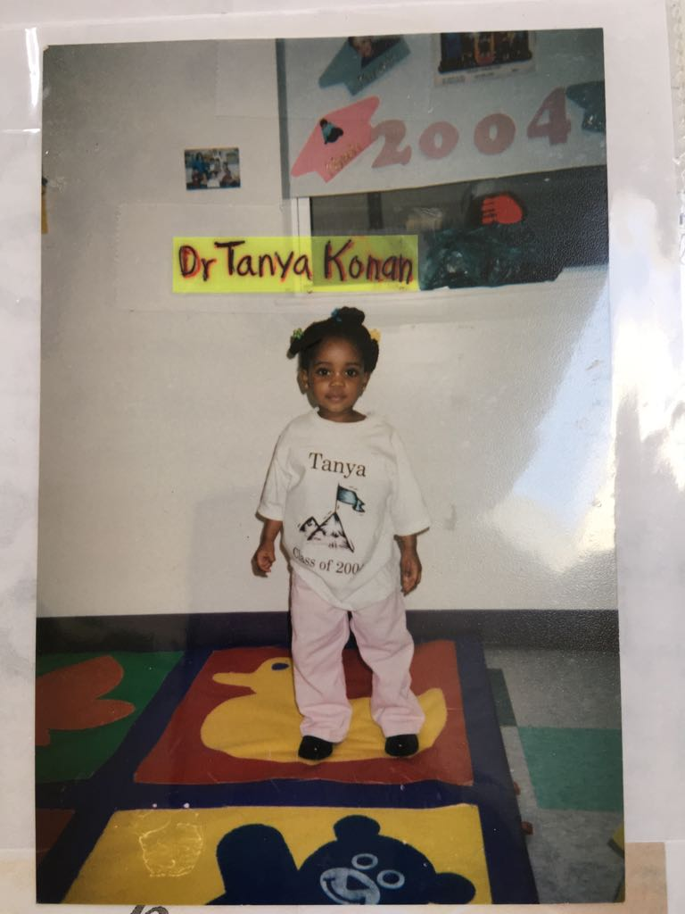
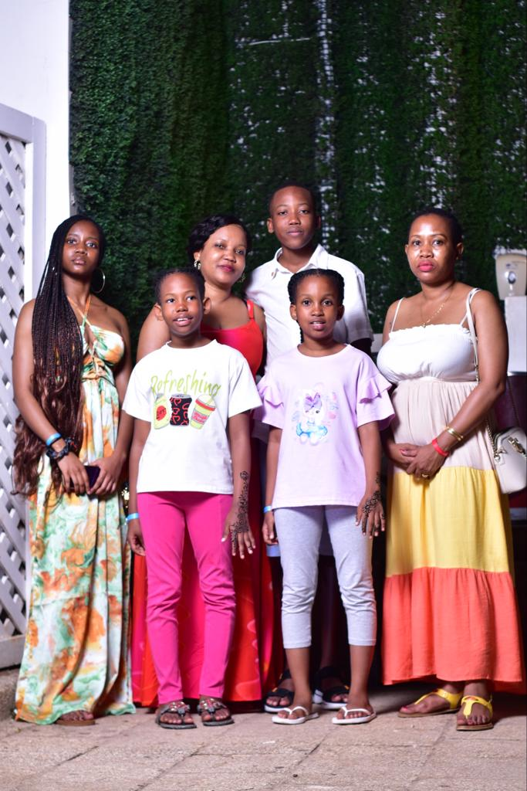
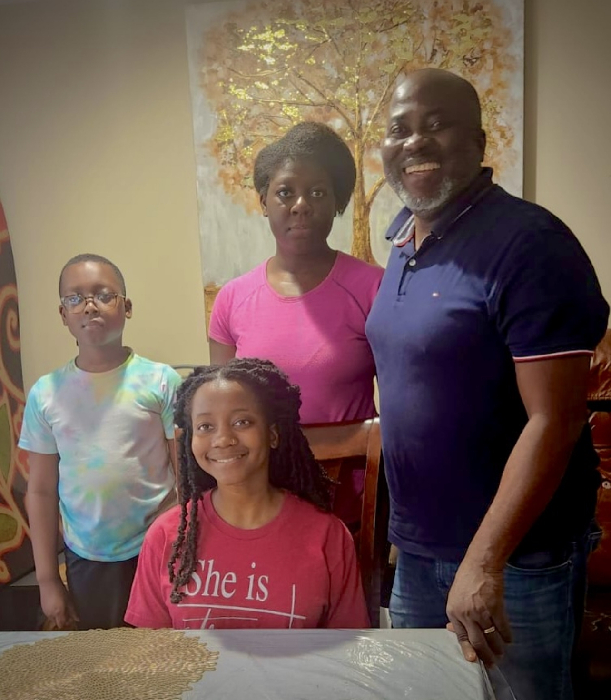
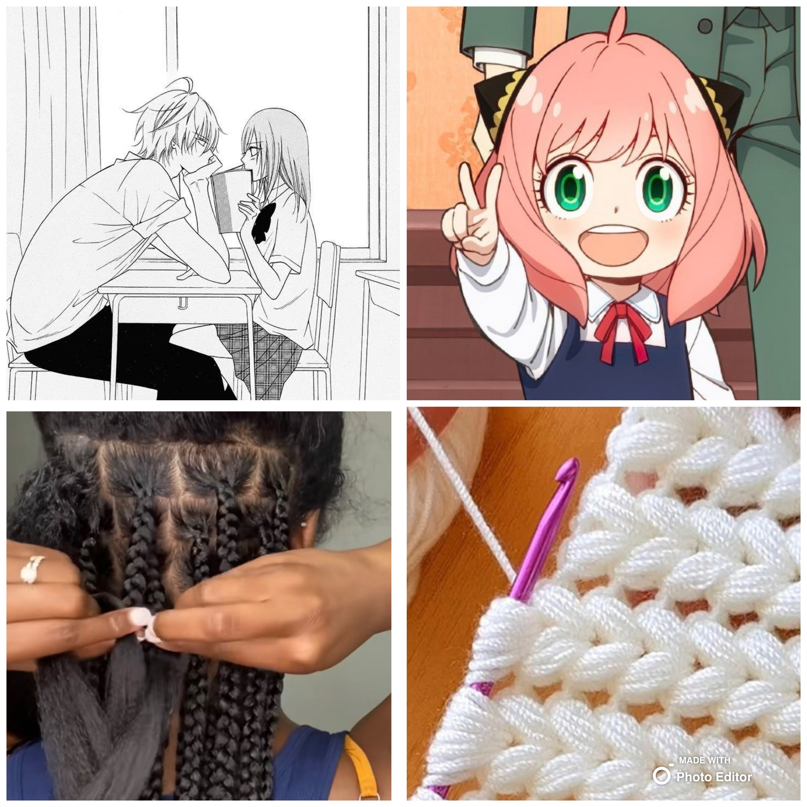

•My Bio•



Hello! My name is
Tanya Amenan Konan, but a lot of people call me
Toni.I respond to both Tanya and Toni, so whichever is fine.
I was born on April 12th,2002, in
Providence, Rhode Island.
I grew up and lived in
Tanzaniawith my family for
a decade.
My mom originated from
Tanzania,
so I visit my family there time to time.
However, my dad originated from
Ivory Coast
and I've only been there 3 time. While living in
Tanzania
I learned how to speak
S
W
A
H
I
L
I,
making me bilingual
☻.
I have a younger brother, named Arthur.
He's about 14 years old right now. I also have
5 cousins that I consider sibilings,
since I grow up with them ♥. In my
21 years of living, I've moved
around quite a bit, from city to city and country to country.
Due to my frequent moving, I had to switch schools for a bit. But, because of
that, I received and experienced life lesson
that
I still carry with me. So I'm thankful
for those experiences and I'm glad that I met so many people in my life.
In my life, I've moved around quite alot. So here are the schools I attended.
•My Education (so far)•
Primary/Elementary School
-
St
Augustine
school
- 1st & 2nd Grade -
Canon Andrea Mwaka School
(
CAMS
)
-Standard 3 ~ 7 (3rd ~ 7th Grade)
Secondary/High School
-
Canon Andrea Mwaka School
(
CAMS
)
- Form 1 (HS Freshman year) -
Academic International Secondary School
(
AISS
)
- Form 1 (repeated) ~ Form 3
(HS Freshman to Junior year) -
Klein
Cain High School
- HS Senior year
College
-
New England Institute of Technology
(
NEIT
)
- Currently attending
•My Hobbies•
These are some of the things that I got into.
- Crocheting
- Braiding
- Watching Anime
- Reading Manga/Manhwa/Manhua
